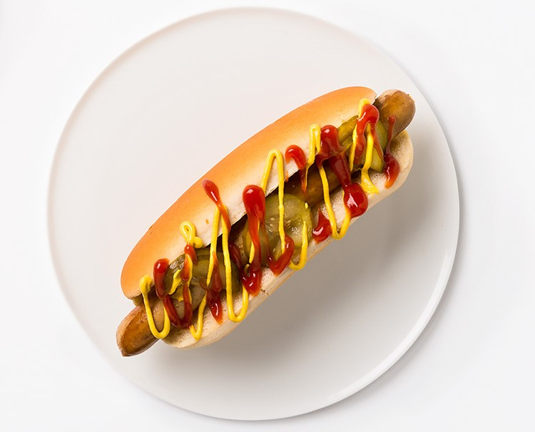

Hot Dogs

Description
Is there a better treat than hot dogs? Quick, tasty, yummmmmy. There is always room in the tummy for a yummy hot little dog.
Ingredients
- hot dogs or real dog meat, if available
- soft buns
- mustard
- ketchup
- pickles
Steps
- Cook your hotdogs in a hot bowl of water or ...
-
Make your own dog
- Find a stray dog and make it trust you
- Slay it and take everything except for the organs home
- Skin the animal and put it in a meat processor
- Make sausage and make the dog hot (see step 1)
- Optional: Feed your neighbour (I have done this once, it was also her dog.. hilarious, she never knew)
- Warm the bread in your microwave (10 seconds is enough)
- Put it all together: bread, dog, sauces and pickles. Amaaazing!
Home